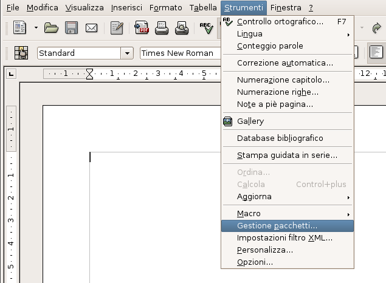
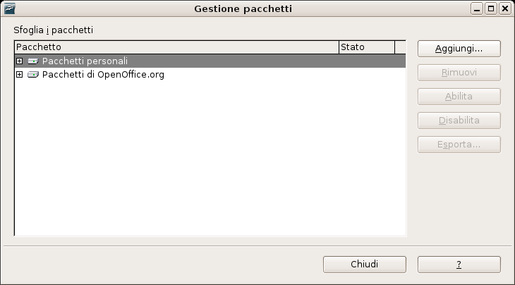
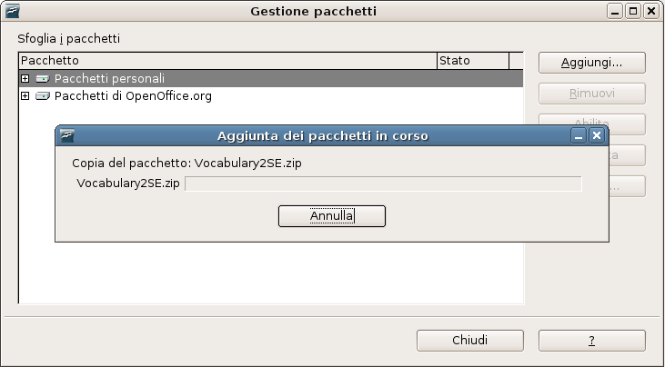

Strumenti per l'attività di traduzione
Quali sono gli strumenti a disposizione?
Sono stati selezionati e messi a punto alcuni strumenti di supporto per l'attività di traduzione. Gli strumenti sono:
- DicOOo: pacchetto linguistico italiano aggiornato con correttore ortografico, sillabazione e dizionario dei sinonimi
- OOo Vocabulary: traduttore parole con dizionario bilingue e glossario OpenOffice.org
- OmegaT: gestore di memorie di traduzione
Inoltre si suggerisce di utilizzare i seguenti strumenti per facilitare la consultazione di risorse su internet da OpenOffice.org:
DicOOo: pacchetto linguistico italiano aggiornato con correttore ortografico, sillabazione e dizionario dei sinonimi
Il progetto mette a disposizione un pacchetto linguistico che comprende in un unico file compresso le ultime versioni del correttore ortografico, sillabazione e dizionario dei sinonimi. Il pacchetto linguistico italiano è reperibile presso la seguente URL:http://sourceforge.net/project/showfiles.php?group_id=128318&package_id=163313
DicOOo è un assistente software che permette un'installazione facile dei dizionari (correttore ortografico, sillabazione e dizionario dei sinonimi) per gli utenti. Tale assistente è stato integrato in OpenOffice.org 2.0 ed è situato sotto il menu File -> Procedure guidate -> Installa nuovi dizionari . Per maggiori informazioni sul suo funzionamento potete consultare la seguente pagina di istruzioni.
OOo Vocabulary: traduttore parole con dizionario bilingue e glossario OpenOffice.org
E' stata predisposta una versione speciale di OOo Vocabulary che comprende un dizionario bilingue inglese ed glossario OpenOffice.org per facilitare l'attività di traduzione e verifica dei testi riguardanti OpenOffice.org. Per avere maggiori dettagli sul programma potere consultare la pagina OOo Vocabulary.La versione speciale di OOo Vocabulary è reperibile presso la seguente URL:
http://prdownloads.sourceforge.net/ooodocs/vocabulary2se.zip?download
Installazione
Questa versione è stata studiata per facilitare al massimo l'installazione anche per gli utenti meno esperti. Per questo motivo viene utilizzata la nuova funzione Gestione Pacchetti disponibile nella versione 2.0 di OpenOffice.org. Per installare il programma in OpenOffice.org procedete come segue:
1. Prelevate il file con il pacchetto compresso contenente OOo Vocabulary SE.
2. Avviate OpenOffice.org 2.0.

3. Selezionate da menu Strumenti -> Gestione pacchetti...

4. Premete sul pulsante Aggiungi e selezionate il file di OOo Vocabulary SE.

5. Una volta terminata l'installazione, chiudere OpenOffice.org e riavviarlo.
- dal menu Strumenti -> Add-on -> Vocabulary
- dalla barra strumenti Add-on. Attivabile attraverso il menu Visualizza -> Barre dei simboli -> Add-on
- da tastiera con la combinazione tasti CTRL-t.
OmegaT: gestore di memorie di traduzione
OmegaT è un programma Java compatibile con il formato dei file di OpenOffice.org 1.1.x e 2.0. Tale programma è reperibile presso il sito:http://sourceforge.net/projects/omegat
OOoWikipedia: accesso a Wikipedia dall'interno di OpenOffice.org
OOoWikipedia è uno strumento integrato in OpenOffice.org di consultazione di Wikipedia, un'enciclopedia libera e multilingue. La pagina ufficiale di OOoWikipedia si trova qui.
Tale programma è reperibile presso il questo collegamento: OOoWikipedia-2.1.zip.
Si installa nel seguente modo:
- Selezionate da menu Strumenti -> Gestione pacchetti...
- Premete sul pulsante Aggiungi e selezionate il file di OOoWikipedia.
- Una volta terminata l'installazione, chiudere OpenOffice.org e riavviarlo.
- Al riavvio, troverete OOo Vocabulary installato in OpenOffice.org.